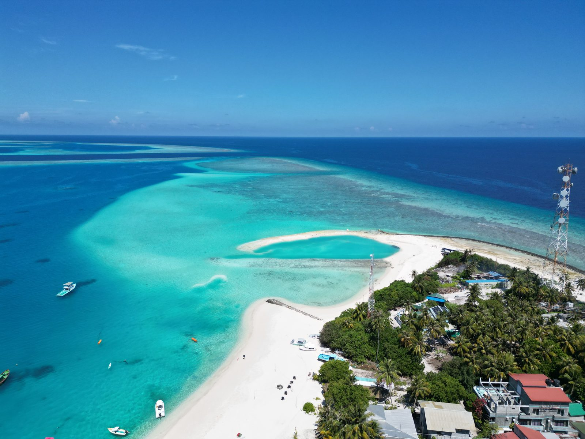
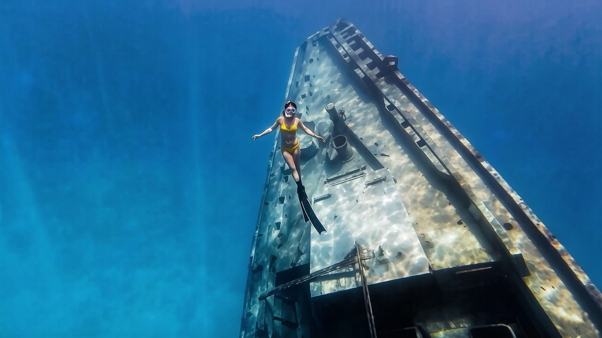
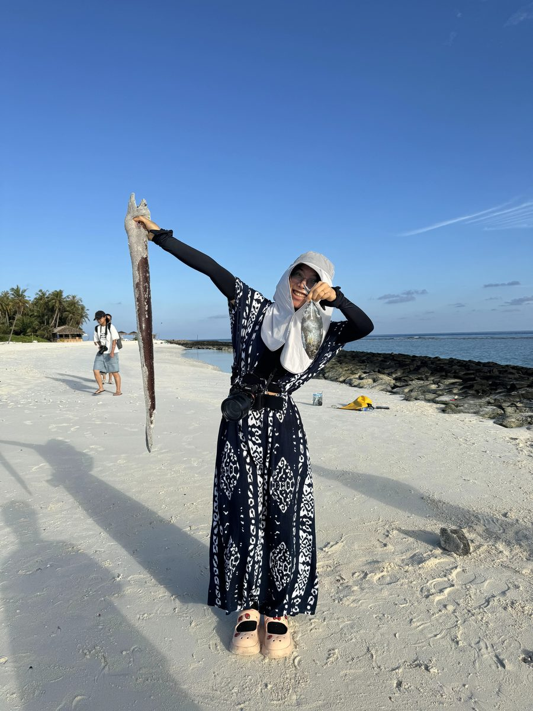
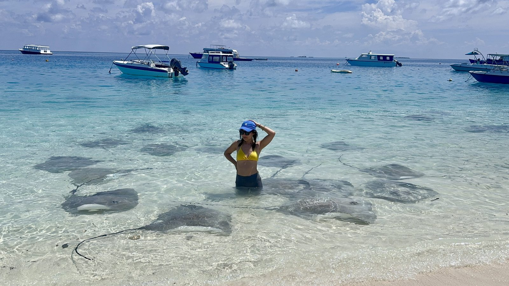
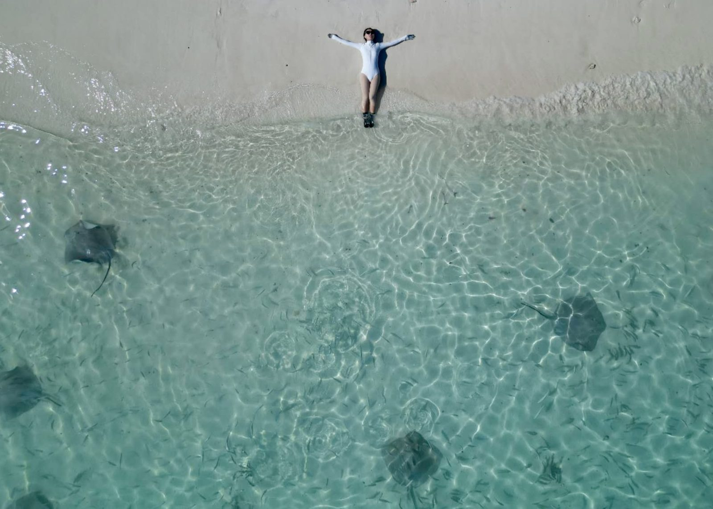
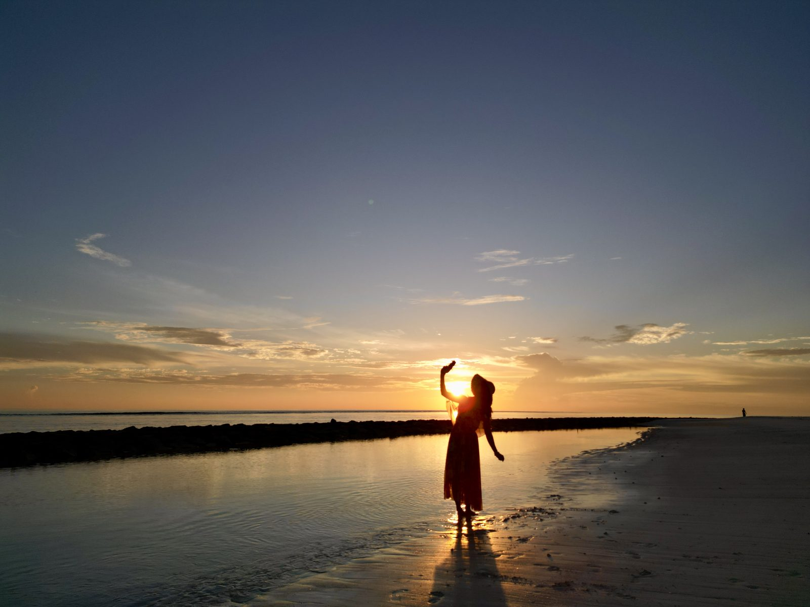
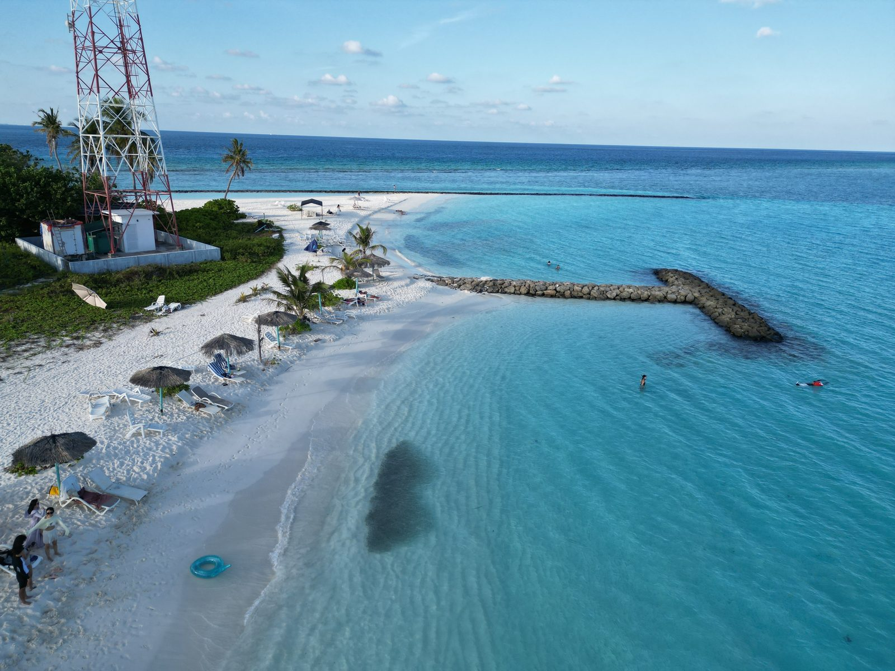
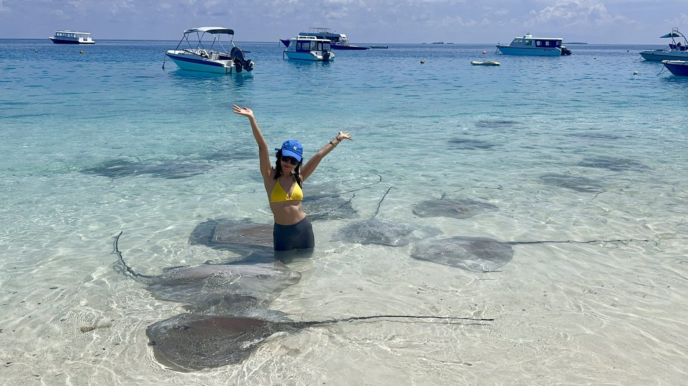
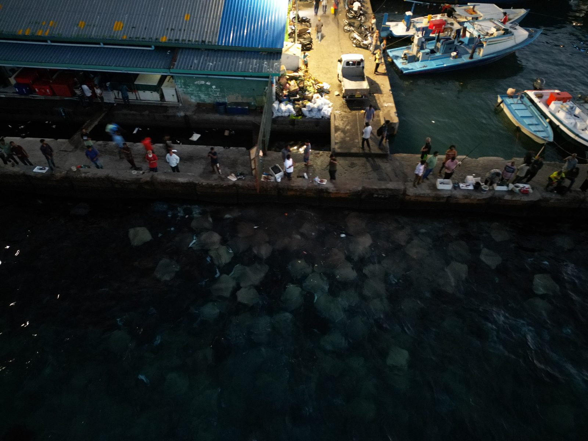

网上总刷到「一万块够不够去马代」的帖子。小时候我也觉得那是件特别奢侈的事。后来才明白，我们多半是被信息茧房裹住了——你刷到的马代是度假岛的马代，居民岛是另一套价格体系。
不到 6000 块（含往返机票；落地马累后人均只花 1314 元，不到 200 美元），我们 3 个人住了 8 天 7 晚：Fulidhoo 5 晚 + 马累 1 晚 + 胡鲁马累 1 晚。浮潜、断崖、自由潜、夜钓、追海豚、看鲨鱼、拍鳐鱼，一个都没落下——和度假岛是同一片海，出海项目还更丰富。
不适合：怕折腾（大多要中转，落地还要坐船上岛）、怕晒（8:00–16:00 基本出不了门）、对吃要求很高（即便住顶配度假岛也会想吃泡面）的人。
只想躺平度假岛的可以划走了——以下内容都只关于居民岛 Fulidhoo。
一、钱到底花在哪
总账（人均）
| 项目 | 人均（元） | 说明 |
|---|---|---|
| 往返机票 | ¥2678 | 3/30 出发（去程曼谷中转），3/31 抵达马累；4/7 返程（吉隆坡中转） |
| 住宿（7 晚） | ¥1806 | Fulidhoo 5 晚 + 马累 1 晚 + 胡鲁马累 1 晚 |
| 落地后全部消费 | ¥1314（约 200 美元） | 明细见下 |
| 租 Osmo Action 6 | ¥100 | — |
| 电话流量包 | ¥23 | 买了本地电话卡（未充值） |
| 合计 | ¥5921 |
落地后的人均 200 美元是怎么花的
| 项目 | 金额（美元） | 说明 |
|---|---|---|
| 上岛快艇 | $50 | 马累→Fulidhoo，1 小时 |
| 出海项目 | $75 | 夜钓 $20 + 出海两次 $55 |
| 上岛清洁费 | $30 | $5/人/天 × 在岛上 6 天 |
| 吃饭 + 买东西杂费 | 约 $45 | 大部分自己煮，花了一次加工费 |
| 合计 | 约 $200（≈¥1314） |
我们 3 个人，除掉机票和酒店，一共只用了 590 美元。
二、机票与上岛交通
全国飞马累，常见的中转地是吉隆坡、曼谷、科伦坡。我们这次 3/30 出发、去程曼谷中转、3/31 抵达马累，4/7 返程、回程吉隆坡中转。价格规律：
- 大湾区出发：便宜时 ¥2000 以内
- 其他城市：¥3000 以内
- 通常不含托运——朋友同行可以只买一份，让买的那个人带大部分行李（我们就是这么干的，还塞了一大箱吃的）
我们主要飞亚航（AirAsia），廉航规矩提前知道会舒服很多：
- 没有免费餐食和水——候机室买瓶水带上机，长途飞行口渴比饿更难受
- 飞机上非常冷——带一件外套、穿长裤，几乎不占行李空间，缺了全程难受
怎么上岛
| 方式 | 价格（每人） | 时长 | 注意 |
|---|---|---|---|
| 快艇 | $50（或 800 拉菲亚） | 1 小时 | 每天有班次，可让酒店代订，上船付款 |
| 公共轮渡 | $3.5（或 59 拉菲亚） | 4 小时 | 一周只有三天有船 |
省 $46 的代价是 3 小时：时间紧坐快艇，预算紧坐轮渡，这笔账很好算。但轮渡一周只有三天有船，一定提前查班次，否则会卡在马累。回程 Fulidhoo→马累快艇一天两班（6:30、13:30），轮渡 10:45 发船。

Fulidhoo 的潟湖与拖尾沙滩 · 无人机航拍
我强烈安利这个岛，原因很简单：景色和度假岛一样美，无照骗，肉眼比照片更美。
三、住宿：提前订，多比三家
居民岛住宿人均 ¥300–500/晚是常见区间，关键变量是含不含餐和饮料。 Fulidhoo 岛上的真实对比：
- 我们订的那家：订晚了没得可选，一间房 ¥900 多/晚，只含早餐（3 人分摊，人均 ¥300 出头）
- 隔壁酒店一位姑娘订的：¥500 多，包早晚两餐，吃得更好，酒店也更漂亮
我们那家不推荐，名字就不写了——同一个岛上，比它好又比它便宜的选择有的是。另外别忘了把上岛清洁费 $5/人/天算进预算（我们在岛上 6 天，共 $30；有些攻略单列的「环保税」就是这一笔，别重复计算）。
四、出海项目：20 到 150 美元全价目表
这是全文最值的一段。Fulidhoo 的出海项目，$20–150 不等：
| 项目 | 价格（每人，美元） | 说明 |
|---|---|---|
| 夜钓 | $20 | 17:30–20:00，不含鱼加工费 |
| 出海 3 个潜点 | $30（连报优惠 $25） | 鲨鱼、海龟、海豚、沉船、珊瑚任选 3 个 |
| 加无人沙洲 | $45 | 沙洲比较远，所以更贵 |
| 钓金枪鱼 | $80–100 | |
| Manta + 追鲸（快艇 1 小时） | $120 | |
| 拍摄 | 单点 $20 / 3 个点一天 $50 | 自带设备 = $0 |
一艘船最多 8 人、满载 10 人，通常 4 人起拼船。我们这次花了 $75（夜钓 $20 + 出海两次 $55），鲨鱼和海豚各看了 2 次，另外看了海龟、珊瑚花园、沉船。

沉船点 · 自由潜下潜
想去「上帝鱼缸」：胡鲁马累离它很近，但淡季只能包船，3 个人 $150 只去一个点；从马富士（Maafushi，马代第一大居民岛）过去，最便宜也要 $80–100/人。马富士的出海一点都不便宜——名气大 ≠ 性价比高。
五、这一趟最省的三笔钱
- 自带拍摄设备，省 $20–50。我带了无人机 + Osmo Action 6，船家直接帮我拍，一分钱不花；找拍摄服务是单点 $20、一天 3 个点 $50。
- 自己做饭，人均省 ¥2000+。岛上没什么好吃的，我们带了一大箱吃的自己煮，钓上来的鱼付个加工费让店里做。
- 出海直接找船家。跟酒店报，价格基本是船家的 2 倍，水下摄影、航拍、游泳圈还全是加价项。想省事找酒店，想省钱就自己走两步去码头。
六、出发前带什么
先说一个反直觉的结论：电话卡不用买。出发前在国内运营商 App 开「一带一路」流量包就行，我这趟 8 天花了 ¥23；本地电话卡买了基本没用上——机场酒店有 Wi-Fi，目的地步行可达，打车路边拦。
| 带什么 | 为什么 |
|---|---|
| 防晒霜 | 8:00–16:00 热到出不了门，晒伤是这趟最常见的翻车方式 |
| 外套 + 长裤 | 飞机上非常冷（亚航尤其明显） |
| 帽子 | 岛上遮阴少，出海一整天更离不开 |
| 潜水袜 | 下礁石、走浅滩、看鳐鱼那片水域全靠它，光脚容易割伤 |
| 一次性咬嘴 | 船家提供三件套，但咬嘴公用；自带一个几块钱，干净太多 |
| 水下相机 | 网上租，10 天才一百多块，比在岛上租或按次买拍摄划算得多 |
| 长脚蹼 | 自由潜的请自带；岛上租要几十刀，而且大部分岛根本没得租 |
| 游泳圈 | 酒店提供的是额外收费项，自己带更省 |
| 几套比基尼 | 拍照出片率高，海边天天湿、洗了干不了，而且几乎不占行李空间 |
七、不花钱能玩什么
很多人选岛只看沙滩美不美，但每天能不能方便地玩到东西，才决定这一趟值不值。Fulidhoo 下面这些，全在岛上，一分钱不花：
- 日出、日落、星空
- 浮潜：游出去就是断崖，特别适合练自由潜（我刚学完 AIDA 2，第一站就来了马代）
- 比基尼沙滩：岛上唯一可以穿比基尼的区域，居民岛里很少见
- 玻璃海 / 潟湖
- 鳐鱼和护士鲨：码头每天都能看到成片，这是 Fulidhoo 的特色
- 手线钓鱼：码头和护堤上就能钓，钓什么吃什么，鳗鱼资源尤其丰富
在岛上的一天能有多忙：看日出、晨钓、出海、午休躲过最热时段，下午浮潜、比基尼沙滩拍照、拍日落，晚上夜钓。朋友说我一天洗三遍澡，头发没干过，但每天都好开心。
来了 Fulidhoo 我有点懂钓鱼佬了——资源太丰富，真是有手就会。保底是各种螃蟹和贝壳，超级鲜甜；最念念不忘的是钓上来的一条小腿粗的大鳗鱼，红烧，超好吃。已经和伙伴约好，要再去马代钓鱼。

就是它——钓上来的大鳗鱼 · 后来红烧了

站在浅水里，鳐鱼就从脚边游过

同一片浅滩 · 俯拍
（说句实话：马尔代夫整体的珊瑚不算多，别抱太高期待。）

日出 · Fulidhoo
八、着装、气候与一个避雷
着装与文化
马尔代夫是穆斯林国家，公共场合要注意着装。在 Fulidhoo，只有一个叫「比基尼沙滩」的地方可以穿比基尼，其他沙滩都不行，也不能穿比基尼拍照；拍鳐鱼那里几乎是游客打卡地，也可以穿。

比基尼沙滩 · 岛上唯一可穿比基尼的区域

鳐鱼滩 · 游客打卡地，这里也可以穿
整体感受很好：遇到的本地人都很友善，不会盯着女性看，作为一个女生我觉得比较安全。
气候
我们的行程是 3/31 抵达马累、4/7 离开，境内 8 天 7 晚，避开了斋月。4 月理论上是雨季，但除了离开那天下雨，全程大晴天。2 月有人遇到过雾霾，同期也有朋友在度假岛遇上连续降雨——看运气，但4 月的雨已经不多了。

离开那天 · 马累码头，夜里的「鳐鱼风暴」
一个必须说的避雷
岛上有唯一一家中餐厅：加工鱼 12 美元/条，出海项目报价明显偏高，服务态度也差。最让我在意的是另一件事——他们带客人追海豚时，把一位不会游泳的姑娘留在了海里，穿着救生衣也一样会害怕，那次最后出了状况。
我一般不写避雷，但涉及安全的事情想写下来。岛上出海的船家很多，多走两步、多问两家，别图省事。
九、实用信息
| 项目 | 内容 |
|---|---|
| 行程 | 2026 年 3/31 抵达马累、4/7 离开；境内 8 天 7 晚 = Fulidhoo 5 晚 + 马累 1 晚 + 胡鲁马累 1 晚 |
| 建议天数 | Fulidhoo 至少 5 晚；前后在马累/胡鲁马累各留 1 晚衔接航班（轮渡一周仅三天，必须有缓冲） |
| 签证 | 中国护照落地免签 30 天（出行前请以官方最新政策为准） |
| 机票 | 亚航（AirAsia）为主；大湾区便宜时 ¥2000 内，其他城市 ¥3000 内，通常不含托运。机上无免费餐食和水，且很冷——带外套长裤，候机室买瓶水 |
| 住宿 | 人均 ¥300–500/晚常见；含餐与否直接决定价格，务必多比 |
| 上岛交通 | 快艇 $50/人（1 小时）；公共轮渡 $3.5/人（4 小时，一周仅三天有船） |
| 岛上费用 | 清洁费 $5/人/天（有些攻略说的「环保税」就是这一笔）—— 我们在岛上 6 天，共 $30 |
| 货币 | 岛上通用美元，拉菲亚按 1:20 折算；人均换 100 美元足够（换多了换回去会亏汇率） |
| 上网 | 不用买电话卡，出发前开通国内运营商「一带一路」流量包即可（本次 8 天 ¥23） |
| 装备必带 | 防晒霜、帽子、潜水袜、一次性咬嘴、水下相机（网上租 10 天一百多）、长脚蹼、游泳圈、几套比基尼、一大箱吃的 |
| 不适合 | 怕晒、对吃要求高、怕折腾 |
马尔代夫不贵，贵的是你不知道它可以不贵。
同一片海，有人花了三倍的钱，看到的东西和我们一模一样——区别只在于，我们愿意自己走两步，去码头问一句价格，自己带一箱吃的，自己带相机。
下一站见。
我是 Smile，自由潜 AIDA2，在路上用镜头和真实账单做内容。关注我，下一篇写仙本那。
这是「真实账单」系列的第二篇。第一篇是《同一片海，8年后我又走了一遍菲律宾》——同样是全部真实价格。